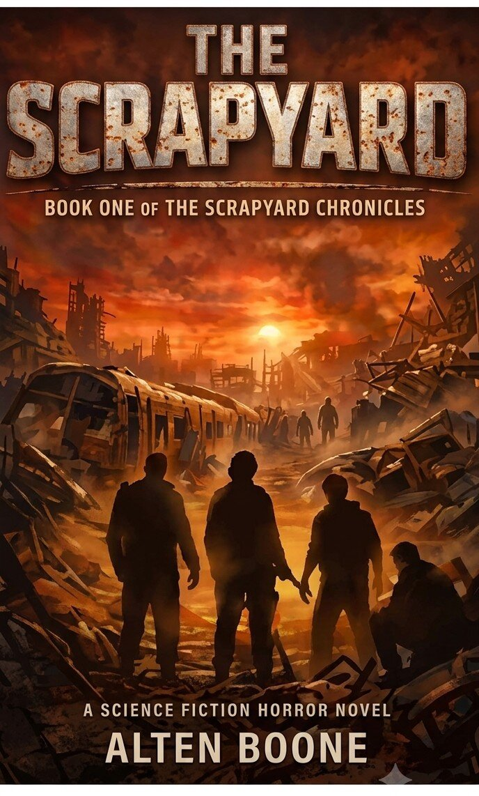

The Scrapyard Chronicles · Book 1
The Scrapyard
Survival science fiction · Published Feb 7, 2026 · ~278 pages · Clearsky Publications · ★★★★☆ 4.4

The morning commute was supposed to end in London. Instead, it ended in another world. When a routine commuter train vanishes from Earth and crashes through a tear in reality, the survivors find themselves stranded in the Scrapyard — a hostile alien world where rifts deposit the broken remains of countless places across time and space. Wrecked technology. Twisted landscapes. Predators that hunt in the dark. With no rescue coming and no understanding of where they are — or why — the survivors must band together to endure relentless attacks from the world’s native creatures. As night falls and the true danger reveals itself, survival becomes a brutal, moment-to-moment struggle, and not everyone will make it through. When help finally arrives, it comes at a cost. The Scrapyard has inhabitants of its own, and safety lies beyond a journey through territory where death is constant and mercy is rare. Every step toward refuge claims another life, and every choice forces the survivors to confront how far they are willing to go to stay alive.